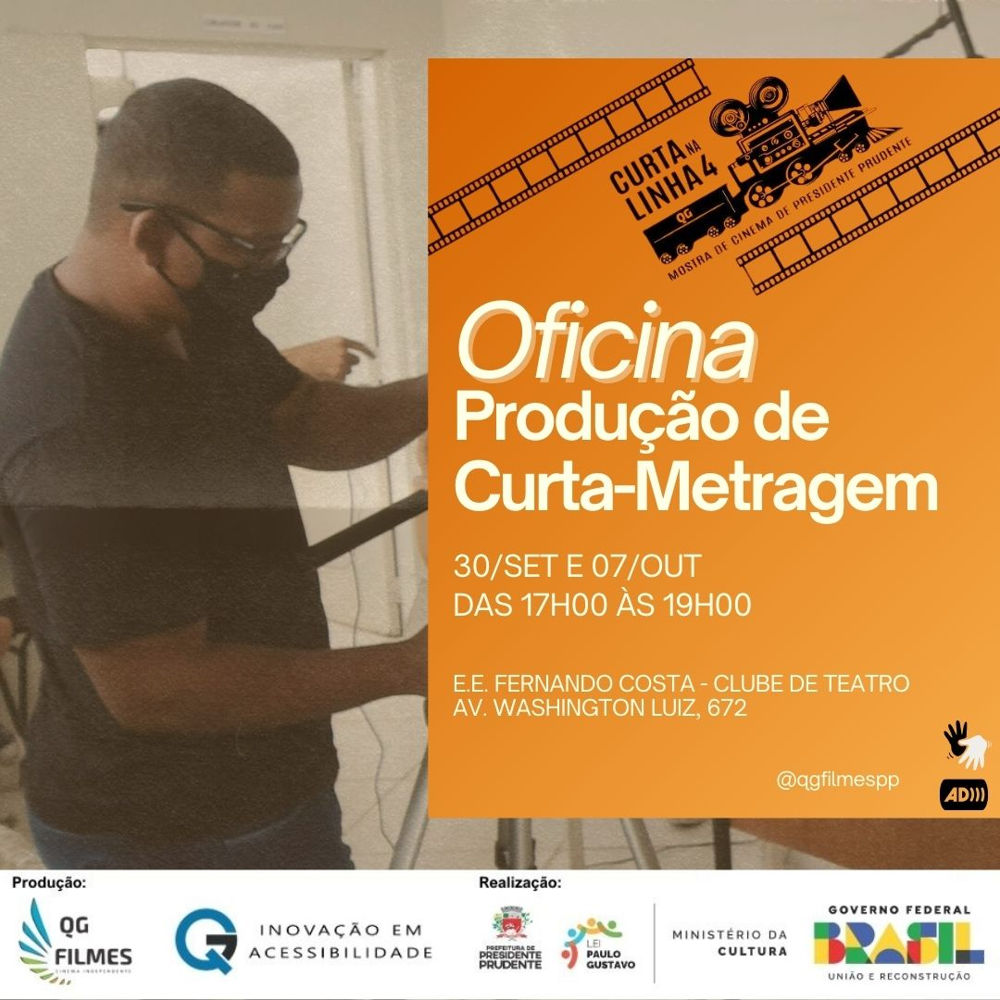

INSCRIÇÕES

Oficina de Curta-Metragem
Saiba Mais
Oficina Curta Documentário
Saiba Mais![Banner promocional de um evento chamado Oficina de Produção de Videoclipe, que ocorrerá entre os dias 3 a 5 de outubro. O fundo do banner é laranja vibrante. No lado direito da imagem, há uma foto de um homem de expressão séria, com barba e cabelos castanhos. Ele está vestindo uma camisa preta e segura uma câmera fotográfica analógica antiga, marca Yashica. No lado esquerdo do banner, em destaque, está o título Oficina de Produção de Videoclipe em letras grandes e brancas, com uma fonte arredondada e chamativa. Logo abaixo do título, está a data 3 a 5 de outubro em preto. No canto superior esquerdo, há o logo do evento Curta na Linha 4, representado por uma câmera de filmagem clássica e uma tira de filme que corre diagonalmente pelo banner. Este logo indica que o evento faz parte da mostra de cinema independente de Presidente Prudente, destacando o cinema regional. No rodapé do banner, há três logos que representam as entidades envolvidas no evento. Da esquerda para a direita: o primeiro logo é da produtora QG Filmes, representado por asas estilizadas em tons de azul, verde e laranja, e o texto QG Filmes Cinema Independente. O segundo logo é da Inovação em Acessibilidade, também em tons de azul e preto. O terceiro logo é do Ministério da Cultura, com o selo colorido do Governo Federal e as inscrições Ministério da Cultura e Lei Paulo Gustavo, que destaca o apoio governamental ao evento. No canto superior direito do banner, há ícones de acessibilidade, como uma mão sinalizando LIBRAS, Língua Brasileira de Sinais, e um ícone indicando a presença de audiodescrição, AD.](./images/zero.jpg)
Oficina de Produção de Videoclipes
Saiba Mais